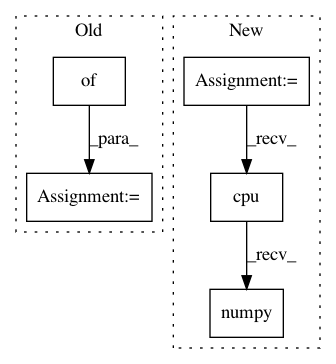

bec15911e08fe5fe3c705c24a23cfd926cc0da95,service.py,LabelService,label,#LabelService#Any#,33
Before Change
A (most likely label, probability) tuple
output = self.sess.graph.get_tensor_by_name("labels_softmax:0")
predictions, = self.sess.run(output, {"wav_data:0": wav_data})
return (self.labels[np.argmax(predictions)], max(predictions))
def encode_audio(wav_data):
After Change
Returns:
A (most likely label, probability) tuple
wav_data = np.frombuffer(wav_data, dtype=np.int16) / 32768.
model_in = model.preprocess_audio(wav_data, 40, self.filters).unsqueeze(0)
model_in = torch.autograd.Variable(model_in, requires_grad=False).cuda()
predictions = F.softmax(self.model(model_in).squeeze(0).cpu()).data.numpy()
return (self.labels[np.argmax(predictions)], max(predictions))
def set_speech_format(f):
f.setnchannels(1)
In pattern: SUPERPATTERN
Frequency: 4
Non-data size: 5
Instances
Project Name: castorini/honk
Commit Name: bec15911e08fe5fe3c705c24a23cfd926cc0da95
Time: 2017-10-05
Author: tang.raphael@gmail.com
File Name: service.py
Class Name: LabelService
Method Name: label
Project Name: dpressel/mead-baseline
Commit Name: da1e8c2de9b265dcb18256a0a087165faf138b42
Time: 2019-01-14
Author: blester125@users.noreply.github.com
File Name: python/baseline/pytorch/seq2seq/model.py
Class Name: EncoderDecoderModelBase
Method Name: predict
Project Name: arviz-devs/arviz
Commit Name: 6b7ac72472c9d549dea45f35669e876c4c8ee2e9
Time: 2019-10-31
Author: fehiepsi@gmail.com
File Name: arviz/data/io_pyro.py
Class Name: PyroConverter
Method Name: posterior_to_xarray
Project Name: HyperGAN/HyperGAN
Commit Name: 365c861ccac7588596907b0cff8ddf69cc7a966c
Time: 2020-07-27
Author: mikkel@255bits.com
File Name: hypergan/samplers/grid_sampler.py
Class Name: GridSampler
Method Name: _sample